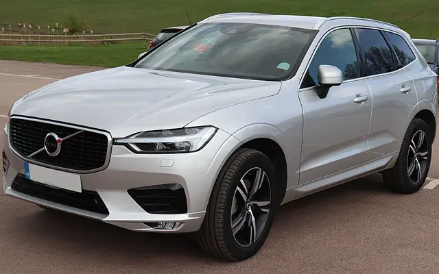

Par Motor › Precios por modelo › Volvo XC60
Precio de segunda mano · noviembre de 2026¿Cuánto vale un Volvo XC60 de segunda mano?

Precio justo estimado de un Volvo XC60 usado en España, año por año, con los kilómetros normales para su edad y en buen estado: de 12.500 € a 62.600 €. Para tasar el tuyo con sus kilómetros reales y su estado, usa el tasador gratis.
Precios del Volvo XC60 por año
XC60 I (2008–2017)
Precio de nuevo: T5 2.0 240 CV, 45.000 € · D3 2.0 150 CV, 42.000 € · T6 3.0 304 CV, 52.000 €
| Año | Km normales | T5 2.0 240 CV · Gasolina | D3 2.0 150 CV · Diésel | T6 3.0 304 CV · Gasolina |
|---|---|---|---|---|
| 2017 | 100.000 km | 22.600 € | 23.300 € | 26.100 € |
| 2016 | 100.000 km | 22.000 € | 21.900 € | 25.400 € |
| 2015 | 100.000 km | 21.400 € | 20.400 € | 24.700 € |
| 2014 | 100.000 km | 20.800 € | 19.000 € | 24.000 € |
| 2013 | 100.000 km | 19.600 € | 17.700 € | 22.700 € |
| 2012 | 100.000 km | 18.300 € | 16.600 € | 21.100 € |
| 2011 | 100.000 km | 17.100 € | 15.400 € | 19.700 € |
| 2010 | 100.000 km | 15.900 € | 14.400 € | 18.400 € |
| 2009 | 100.000 km | 14.800 € | 13.400 € | 17.100 € |
| 2008 | 100.000 km | 13.800 € | 12.500 € | 16.000 € |
XC60 II (2017–hoy)
Precio de nuevo: B4 2.0 (microhíbrido) 197 CV, 52.000 € · D4 2.0 190 CV, 52.000 € · T6 Recharge (enchufable) 350 CV, 68.000 €
| Año | Km normales | B4 2.0 (microhíbrido) 197 CV · Gasolina | D4 2.0 190 CV · Diésel | T6 Recharge (enchufable) 350 CV · Híbrido enchufable |
|---|---|---|---|---|
| 2026 | 5.000 km | 53.200 € | 51.100 € | 62.600 € |
| 2025 | 20.000 km | 45.500 € | 43.700 € | 53.600 € |
| 2024 | 35.000 km | 42.400 € | 40.800 € | 50.000 € |
| 2023 | 50.000 km | 39.600 € | 38.000 € | 46.600 € |
| 2022 | 65.000 km | 36.900 € | 32.600 € | 43.500 € |
| 2021 | 80.000 km | 33.100 € | 30.100 € | 38.900 € |
| 2020 | 95.000 km | 28.900 € | 29.900 € | 34.000 € |
| 2019 | 100.000 km | 27.300 € | 29.700 € | 32.100 € |
| 2018 | 100.000 km | 26.700 € | 29.300 € | 31.400 € |
| 2017 | 100.000 km | 26.100 € | 28.800 € | 30.700 € |
Kilómetros normales: 15.000 al año en gasolina, híbridos y eléctricos, y 20.000 en diésel, con un máximo de 100.000 km (por encima no tasamos: el precio depende demasiado del historial de cada coche). Cifras redondeadas a 100 €.
Preguntas frecuentes
¿Cuánto vale un Volvo XC60 de segunda mano?
Según el año, la versión y los kilómetros, un Volvo XC60 usado vale hoy de 12.500 € a 62.600 € en España. El más barato de nuestra tabla es un D3 2.0 de 2008 (12.500 €) y el más caro un T6 Recharge (enchufable) de 2026 (62.600 €). Son precios justos estimados entre particulares y profesionales, con los kilómetros normales para su edad y en buen estado.
¿Cuánto valor pierde un Volvo XC60 al año?
Con unos años encima, un Volvo XC60 pierde alrededor de un 7 % de su valor cada año (calculado sobre el B4 2.0 (microhíbrido) de la generación XC60 II). Los primeros años la caída es mayor y a partir de los 70.000 km se acelera.
¿Qué motorizaciones tiene el Volvo XC60?
En nuestra base de datos hay versiones gasolina, diésel y híbrido enchufable, en 2 generaciónes: XC60 I y XC60 II.
¿Cómo sé si me piden demasiado por un Volvo XC60?
Abre el tasador de Par Motor, elige el Volvo XC60, el año y los kilómetros reales, y escribe lo que te piden. Te diremos si está por debajo del precio justo (chollo) o por encima (caro). Es gratis y no pide registro ni matrícula.
Otros Volvo
Compara su coste real
El precio de compra es solo una parte. Mira cuánto te costaría al mes con combustible, seguro, neumáticos, mantenimiento y lo que pierde de valor.
Abrir el comparador →